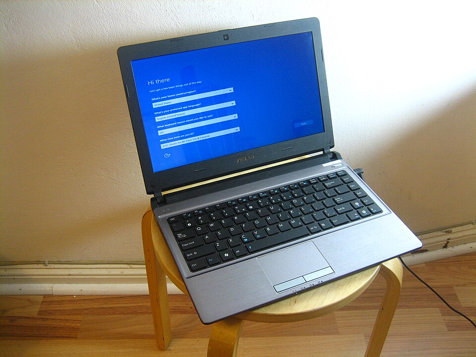
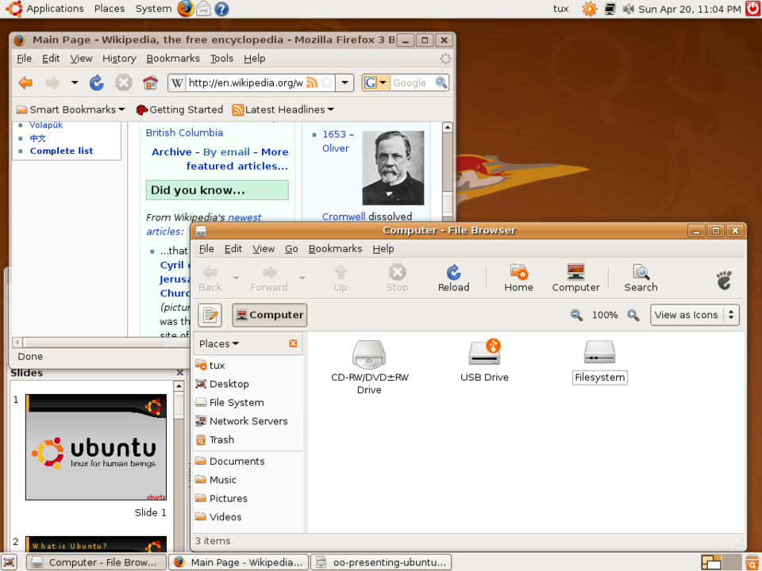

Procedimiento de instalación de un sistema operativo
Instalar un SO requiere planificación y orden. El procedimiento típico abarca desde la preparación del medio hasta la configuración post-instalación.

1. Fases del procedimiento
- Verificar requisitos: CPU, RAM, disco, firmware (UEFI/BIOS).
- Preparar medio: USB booteable o ISO en red (PXE).
- Arrancar: desde el medio y elegir partición/disco.
- Particionar: crear particiones y sistema de archivos (GPT/MBR).
- Copiar archivos: el instalador despliega el SO.
- Configurar: b> usuario, red, zona horaria, actualizaciones.
- Post-instalación: drivers, software, copias de seguridad.
2. Particionado y firmware
El arranque moderno usa UEFI con discos GPT y Secure Boot; el legado usa BIOS con MBR. Elegir bien evita problemas de arranque.
flowchart TD A[Verificar requisitos] --> B[Medio booteable] B --> C[Arrancar instalador] C --> D[Particionar disco] D --> E[Copiar archivos] E --> F[Configurar usuario/red] F --> G[Post-instalación: drivers]
mindmap
root((Instalación))
Requisitos
Medio
Particionado
Copia
Configuración
3. Ejemplo práctico
Instalar Ubuntu: descargar ISO, grabar en USB con herramienta (Rufus/BalenaEtcher), arrancar desde USB (F12/UEFI), elegir 'Instalar Ubuntu', particionar con el asistente (GPT), crear usuario y actualizar al terminar.
Ejemplo resuelto en clase
Caso práctico: Planificar la instalación de un SO.
- Comprueba los requisitos mínimos (CPU, RAM, disco) del SO objetivo.
- Decide particionado: ¿instalar solo o dual boot con otro SO?
- Prepara medio de instalación (USB booteable) y haz copia de seguridad.
- Anota la licencia y la versión a instalar.
graph TD REQ[Requisitos] --> PART[Particionado] PART --> MED[Medio USB] MED --> LIC[Licencia]
Ejercicio para resolver (que propone el profesor al alumno): El alumno entrega un plan de instalación (requisitos, particiones, medio, licencia) antes de instalar.
Ampliación de contenido
Para entender lo anterior (puentes conceptuales)
- Instalar = preparar el terreno y sembrar el SO. No es "meter un CD"; es comprobar que el equipo sirve, dejar el medio listo, y volcar el SO al disco de forma que arranque solo.
- Arranque (boot) es el momento crítico. El equipo debe "saber" que arranque desde el USB y no desde el disco viejo. Por eso se toca la secuencia de arranque (F12/UEFI).
- Particionar = repartir el terreno antes de construir. El disco es una superficie; las particiones la dividen en zonas con su propio formato. Hacerlo mal deja el disco inusable para el SO.
Para profundizar en los contenidos actuales
Requisitos antes de instalar. El SO publica mínimos (CPU de 64 bits, RAM, espacio en disco). Si no se cumplen, la instalación falla o va lentísimo. También el firmware: ¿UEFI o BIOS? Eso condiciona el esquema de particiones.
Medio booteable y PXE. Lo normal es un USB con la ISO grabada (Rufus, BalenaEtcher). En aulas grandes se usa PXE: el equipo arranca desde la red y el servidor le sirve el instalador, permitiendo instalar muchos a la vez.
GPT vs MBR, UEFI vs BIOS. BIOS+MBR es el legado (discos <2 TB, un sector de arranque frágil). UEFI+GPT es lo moderno: discos grandes, varias particiones, Secure Boot. Mezclar (UEFI con MBR) suele dar problemas.
Post-instalación es la mitad del trabajo. Copiar archivos es solo el principio: faltan drivers (que el hardware funcione), actualizaciones (seguridad) y el software del aula. Una instalación "a medias" da un equipo que no rinde.
Respaldo antes de particionar. Particionar borra datos. La regla de oro: copia de seguridad previa. En el aula, además, conviene una imagen del sistema ya configurado para clonar el resto de equipos.
Revisión didáctica
- UEFI no es "mejor BIOS", es distinto. Cambia esquema de particiones (GPT) y añade Secure Boot; no mezclar con MBR.
- El medio booteable no es "copiar la ISO al USB". Hay que grabarla como imagen de arranque; si no, el equipo no arranca desde ella.
- Particionar borra datos. Hacerlo sin respaldo es la causa típica de pérdida de archivos.
- Instalar ≠ configurar. Tras copiar archivos faltan drivers y actualizaciones; el equipo no está "listo" hasta la post-instalación.
- PXE no es "un USB por red". Es arranque desde servidor; útil para muchos equipos, pero requiere infraestructura (servidor DHCP/TFTP).
Hilo de aprendizaje sugerido: (1) verificar requisitos → (2) preparar medio (USB/PXE) → (3) secuencia de arranque → (4) particionar (GPT/MBR, UEFI/BIOS) → (5) copiar y configurar → (6) post-instalación (drivers, actualizaciones) + respaldo.
Enlaces relacionados
Recursos externos
Vídeos y artículos recomendados para ampliar y preparar el tema: